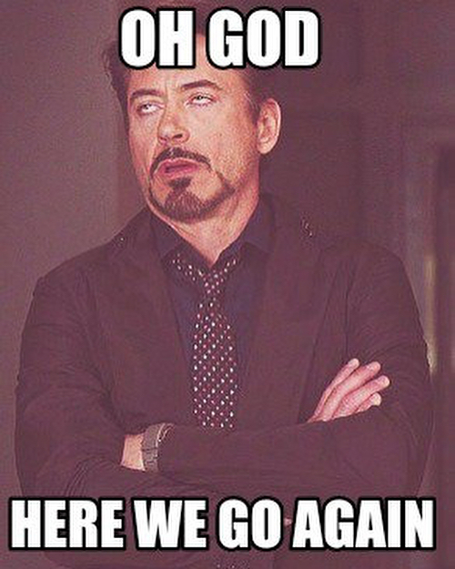

I find these 2 photos kinda similar in color schemes 😄 and yes - here we go again - post about healthy food choices 🙈😂 mung and black beans porridge with baked salmon - it’s a protein bomb 💣💪🏼 also great source of fiber and omega-3 fats 👌🏼 . . . . . На мой взгляд, эти 2 фотографии имеют одно общее - цветовую гамму 😄 и да - опять 25 - пост про выбор здоровой еды 🙈 каша из маша и чёрных бобов с запеченным лососем - это просто протеиновая бомба 💣💪🏼 также, шикарный ресурс клетчатки и омега-3 жиров 👌🏼 — #balanceddiet #homemade #cookathome #complexcarbs #triathlontraining #ironmantraining #swimbikerun #marathontraining #ironmantri #trailrunning #foodblogger #instafood #foodography #orbea #cervelo #specializedbikes #giantbikea #canyonbikes #homemadefood #proteins #omega3 #mungbean #porridge #herewegoagain
2018-05-02 22:02:08
Back to main page